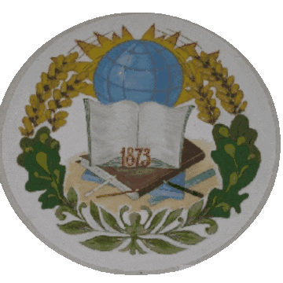

Вітаємо на сайті Грицівського ліцею
Новини ліцею
Дистанційне навчання
Учням
Кодекс ліцею
- Будь ввічливим, поважай батьків, вчителів, пишайся довірою товаришів.
- Будь правдивим, май мужність щиро визнавати свою провину, ніколи не перекладай на інших.
- Умій учитися, щоб уміти трудитися.
- Стеж за своїм зовнішнім виглядом, носи одяг встановленої форми.
- Бережи шкільне майно.
- Дбай про свій фізичний розвиток.
- Захищай природу і все живе на Землі.
- Будь чуйним і милосердним.
- Нікого не ображай – ані словом, ані вчинком, дбай про молодших, допомагай їм, борони тих , хто слабший за тебе.
- Бери активну участь у роботі учнівського самоврядування
- Будь вірний Україні та її народові, люби і поважай свою країну.
- Виконуй Статут ліцею, правила внутрішнього розпорядку.
- Знай і виконуй правила дорожнього руху, пожежної безпеки, техніки безпеки.
- Всебічно розвивай свої здібності.
- Викорінюй шкідливі звички у себе та допомагай своїм товаришам у цьому.
Інформація про ліцей
Історія ліцею
З “Історії села Грицева” відомо, що у Грицеві “просвещение существовало с 1873 года”. Це було однокласне училище Міністерства освіти. Незважаючи на серйозну назву, це була звичайна сільська хата, в якій не було навіть дерев’яної підлоги. В училищі навчалось лише 40 хлопців.
“В 1888 году было до 80 душ мужского пола…, со льготными сведетельствами окончили 13 человек мужского пола”.
У 1909р. побудоване двокласне училище у якому, крім класних кімнат була і квартира для вчителя, вхід у яку знаходився з двору. (Тепер в цьому приміщенні розміщені початкові класи.)
В 1919р. в училищі навчалось всього 106 хлопчиків і 37 дівчаток, тоді як населення Грицева ще в 1905р. налічувало 4489 чоловік з 524 дворів. На утримання училища у 1912р. виділялось від казни 1236 карбованців, від земства – 164 карбованці, від громади – 300 карбованці.
З приходом Радянськаї влади на базі училища у 1923р. була організована семирічна трудова школа – єдина у Грицівському районі. Називалась вона Грицівська Єдина Трудова семирічна школа. Навчання проводилось у дві зміни. Учні з навколишніх сіл жили у гуртожитку. На 1925-1926рр. налічувалося 9-11 комплектів чисельністю 250-300 учнів. У зв’язку з тим, що шкільний контингент постійно зростав, з’явилась потреба в новому приміщенні школи.
У 1928-1929р. у Грицеві було збудовано дерев’яне приміщення на шість класних кімнат. На 1935 –1936 н.р. у Грицеві було заплановано створення 8-го класу. Так було створено єдину на весь район середню школу, в якій навчалося до 650 учнів. Хоч як важко було, та 1939 р. закінчили будувати двоповерхове цегляне приміщення. Під час війни школа не працювала. У спустошених класних кімнатах окупанти зробили казарми та конюшню.
Добудовувалась школа у післявоєнний час: у 1964 р. з’єднали своєрідним переходом, у якому розмістився хімічний кабінет і лаборантська, одноповерхове і двоповерхове приміщення; 1973 р. став до ладу будинок, де розмістилися кабінети трудового навчання; У 1978-1980 р. велося будівництво військового кобінету і тиру, а також складів для збереження палива. Протягом 1987-1988 р. силами вчителів, батьків і учнів збудували нову шкільну їдальню!
У 1991 році розпочали будівництво нової двоповерхової школи за типовим проектом (заклали перший камінь нової школи)
Символіка ліцею
Гімн
На музику А.Горчинського, слова О.Москалюк
Ти завжди молода, велична, горда й строга,
Не владні над тобою історії вітри.
Не заросте повік до тебе знань дорога,
Якою ти ведеш в незвідані світи.
Приспів:
Школо рідна, всі ми – твої діти.
Ти – наш рідний і затишний дім.
Йдем у світ, теплом твоїм зігріті,
І про тебе ми розкажем всім.
Немало таємниць розкрила перед нами
Навчила нас любити, і мріяти й дружить,
Раділа разом з нами і сумувала з нами.
Ну як тебе, рідненька, за все це не любить?
Приспів:
Ми любимо тебе, до тебе поспішаєм,
Коли дзвінок подасть закличний голос свій.
А ти чекаєш нас – про це ми пам’ятаєм,
І вогник твій далекий для нас усіх святий
Герб
Книги на гербі – це символ знань, які дає наша школа. А знання – це сила, на якій тримається світ. Отримавши грунтовні знання, випусники успішно працюють в різних сферах життя. Їх досягнення відзначаються. А тому лавровий лист – це символ винагороди за працю. Україна сильна людьми, які своєю працею збагачують рідну землю. Листя дуба та колосся пшениці, що тягнуться до Сонця як основи життя на Землі, символізують могутність і багатство нашої держави. Кожен предмет на гербі – це символ. В 1873 році у Грицеві було створено школу (однокласне училище, в якому навчалось 40 хлопців).